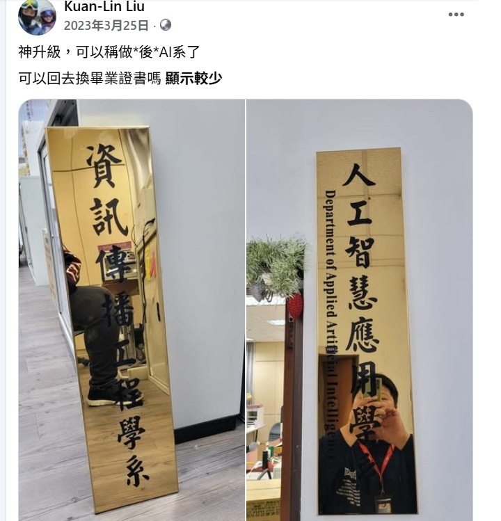

AI Agent 與 CLI 入門
讓 AI 在你的資料夾裡做事
劉冠麟
leo_liu@liveabc.com
- 現職LiveABC 研發四部/專案業務部 經理
- 團隊10人
- 學歷銘傳大學資訊傳播工程學系
國立中央大學網路學習科技研究所 - 專長數位學習專案開發
多媒體互動課程設計
AI應用程式開發
政府輔助計畫專案管理 - 興趣跟AI AGENT講話、音樂創作、玩小孩

“被”AI系

Discord 協作入口
加入頻道、找到小來福、開始提問
為什麼要加入 Discord？
查課表很快
直接問日期、課名、時間、地點，不用翻整份計畫書。
查課程內容
可以問某堂課會學什麼、用哪些 AI 工具、講師是誰。
問計畫規則
招生資格、名額、獎勵、模組差異，都可以直接問小來福。
怎麼加入 Discord 頻道？
- 先準備好 Discord 帳號（手機 App 或電腦版都可以）
- 掃描右方 QR Code（或點開下方連結）加入本課程 Discord 伺服器
- 進入指定的 課程頻道 / 助教頻道
- 就可以直接在裡面提問或 @ 小來福
怎麼 @ 小來福？
在 Discord 訊息框輸入 @小來福，再接你的問題即可。
可以這樣問
@小來福 今天的共同課程是什麼？ @小來福 8/13 那堂課會用到哪些工具？ @小來福 A+B 跟 A+C 差在哪裡？
比較好的問法
- 一次講清楚：日期 + 問題
- 問課表時，最好帶上 課程日期
- 問模組差異時，直接寫 A+B / A+C
- 如果想問資格，直接問：我符合報名條件嗎？
你會親手做出一個資料夾 📁
一個叫 ai-agent-demo 的資料夾，裡面有 AI 幫你產生的：
summary.md
AI 幫你整理的課程摘要
todo.md
AI 產生的本週學習任務
talk-outline.md
3 分鐘報告大綱
speaker-script.md
3 分鐘報告講稿
checklist.md
自我檢查清單
你的筆記
notes/week1.md
課程地圖 🗺️
Part 1 · 懂 AI
生成式 AI、token、prompt，從 LLM 到 Agent
Part 2 · 懂 CLI
用文字命令控制電腦與檔案
Part 3 · 裝工具
安裝並登入 Antigravity CLI
Part 4 · 做出來
讓 Agent 讀檔、規劃、產生檔案
核心目標：會下任務、會看結果、會控風險
課前準備 ✅
大部分工具課堂上會一起裝，但這三樣先備好，等等會順很多：
VS Code
程式編輯器，等等用 code . 打開資料夾
code.visualstudio.com
可登入 Google 的瀏覽器
Chrome / Edge 皆可，安裝與登入 Antigravity 會用到
穩定網路
安裝、登入、呼叫 AI 都需要連網
先搞懂生成式 AI
它到底在做什麼？跟搜尋差在哪？
生成式 AI 到底是什麼 🎬
帶著三個問題看影片，看完就能一路接到後面的 Agent 與 CLI：
- AI 是「找答案」還是「造答案」？
- 它為什麼是一個字一個字生成的？
- 它會不會講錯？為什麼？
生成式 AI ≠ 搜尋 🔍
🔎 傳統搜尋
找出「已經存在」的答案，把網頁列給你。
✨ 生成式 AI
根據學到的模式，產生一個可能合理的新答案。
Token 與逐步生成 🧩
模型不是一次吐出整篇，而是把文字拆成 token，看著前文預測「下一個」，一路接下去。
# 模型會根據前文，推測下一段可能接什麼
今天我想學 AI，因為我希望…▮
- Prompt 寫得清楚 → 輸出比較穩
- 上下文放錯 → 答案會偏
- 看起來很有邏輯，但仍可能是錯的
Prompt 不是咒語，是「任務規格」📐
角色 + 目標 + 上下文 + 限制 + 輸出格式 + 檢查標準
❌ 差的 prompt
「幫我讀 AI。」
✅ 好的 prompt
你是我的學習助理。請讀 notes/，產生 summary.md：100 字摘要＋5 個關鍵詞＋3 個還想深入了解的問題。不要加筆記裡沒提到的事實。
Chatbot → Assistant → Agent 🤖
| 類型 | 能力 | 例子 |
|---|---|---|
| Chatbot | 回答問題 | 解釋 AI 是什麼 |
| Assistant | 幫你整理資訊 | 摘要一篇文章 |
| Agent | 拆任務＋用工具執行 | 讀資料夾、產生講稿、檢查檔案 |
Chatbot 偏「回答」，Agent 偏「執行」，而 CLI 讓 Agent 能在你的電腦上真的動手。
Agent 的五個關鍵能力 🧭
Planning 規劃
把大目標拆成步驟
Tool use 用工具
讀檔、寫檔、跑命令
Memory 記憶
記住任務與上下文
Reflection 反思
檢查結果再修正
Human-in-the-loop
人先看計畫再放行
用 AI 要小心的五件事 ⚠️
- 幻覺：講得很像真的，內容卻可能是錯的
- 隱私：別把私人資料、身分證、密碼貼給 AI
- 權限：Agent 會改檔案，就可能改錯
- 成本：API 呼叫會累積費用與額度
- 責任：最後要為成果負責、對外交出去的人，仍然是你自己
CLI 入門
用文字命令，把 AI 從聊天框帶進真實工作
CLI ＝ 用文字控制電腦 ⌨️
AI Agent 在 CLI 裡特別強，因為它能操作：
檔案 / 資料夾
讀、建、改
套件 / 程式
安裝與執行
Git / 測試
版本與驗證
移動與查看 🧭
pwd # 現在在哪個資料夾 ls # 列出檔案與資料夾 cd demo # 進入 demo 資料夾 cd .. # 回上一層 cls # 清空畫面 cat notes.md # 看檔案內容
pwd ls cd demo cd .. clear # 清空畫面 cat notes.md
兩邊幾乎一樣，只有「清空畫面」不同：🪟 用 cls、🍎 用 clear。
建立與整理 🛠️
mkdir notes # 建立資料夾 New-Item week1.md # 建立空檔案 "今天學 CLI" > week1.md # 寫文字進檔案 Copy-Item a.md b.md # 複製檔案 Rename-Item a.md c.md # 改檔名 code . # 用 VS Code 打開
mkdir notes touch week1.md echo "今天學 CLI" > week1.md cp a.md b.md mv a.md c.md code .
三條安全規則 🛡️
- 不要把 API key、密碼、身分證、私人資料 貼給 AI
- 看不懂的刪除指令不要執行（例如 rm、del 之類）
- 每次 Agent 改完檔，用 Git 或檔案 diff 檢查它到底動了什麼
安裝 Antigravity CLI
Google 的新一代終端機 AI 代理工具
認識 Antigravity CLI（agy）🤖
一個指令啟動
在終端機輸入 agy 就開始
會在電腦上做事
讀檔、寫檔、跑命令、把任務拆步驟
免裝 Node.js
單一執行檔，裝好即用
Google 的終端機 AI
預設 Gemini 3.5 Flash，會自動選模型
安裝 Antigravity CLI ⬇️
irm https://antigravity.google/cli/install.ps1 | iex⬛ Windows · CMD 命令提示字元
curl -fsSL https://antigravity.google/cli/install.cmd -o install.cmd && install.cmd && del install.cmd
curl -fsSL https://antigravity.google/cli/install.sh | bash
irm｜iex 是 PowerShell 專用、CMD 不能用，所以 CMD 改抓 install.cmd 再執行。兩者差別看下一頁。
安裝完，直接輸入指令啟動：
agy # 啟動 Antigravity CLI
它是單一執行檔，不需要先裝 Node.js。網路被公司/學校擋住，改到 antigravity.google/download 下載安裝檔。
PowerShell 還是 CMD？怎麼選 🤔
| 🪟 PowerShell（首選） | ⬛ CMD 命令提示字元 | |
|---|---|---|
| 定位 | 較新、功能強，微軟主推 | 傳統、較陽春，相容舊環境 |
| 安裝 AGY | irm …｜iex 一行完成 | 不支援 irm／iex，需先抓 install.cmd 再執行 |
| 怎麼打開 | 開始列搜尋「PowerShell」 | 開始列搜尋「cmd」或「命令提示字元」 |
| 本課 | ✅ 課堂首選 | PowerShell 被鎖住時的備援 |
看懂安裝指令：irm … | iex 🔎
irm https://antigravity.google/cli/install.ps1 | iex
irm
Invoke-RestMethod 縮寫。從網址下載安裝腳本的內容。
|（管線）
把左邊下載到的東西，交給右邊處理。
iex
Invoke-Expression 縮寫。把收到的文字當指令執行，完成安裝。
irm … | iex ＝ 下載網路腳本並直接執行。只對信任的官方網址（這裡是 antigravity.google）這樣做。🍎 Mac 的 curl … | bash 是一模一樣的道理。用 Google 帳號登入 🔑
- 第一次執行
agy，它會問你要怎麼登入 - 選 「1. Google OAuth」，按 Enter → 自動開瀏覽器
- 用 Google 帳號登入、同意授權，畫面會給一段代碼
- 把代碼複製、貼回終端機 → 看到對話畫面就成功 ✅
Antigravity CLI 快速上手 🏁
登入後，先丟一句話試試：
Give me a famous quote on Artificial Intelligence
看指令與快捷鍵：
/help # general / commands / shortcuts
可用模型（官方）：
- Gemini 3.5 Flash（預設）/ 3.1 Pro
- Claude Sonnet 4.6・Claude Opus 4.6
- GPT-OSS 120B
方案說明 💳
| 方案 | 月費 | 適合誰 |
|---|---|---|
| Free 免費 | $0（免信用卡） | 今天上課、輕度試用 |
| Pro | 約 US$20 | 常態使用 |
| Ultra | 約 US$100 | 重度使用 |
| Ultra Max | 約 US$200 | 團隊 / 專業 |
免費額度要省著用 ⛽
免費個人帳號
每天 20 次 agent 請求
（Gemini Flash 額度每 5 小時回補）
所以在課堂上
每個 prompt 想清楚再送
不要一直重試、洗版
省額度小技巧 & agy 能生成什麼 ⚡
🎯 讓每次都問到位（省額度）
- 一次講清楚：角色＋目標＋限制＋格式，別一句一句擠
- 一個 prompt 產多個檔（summary＋todo＋checklist）
- 只指定要讀的檔：
只讀 content/about.md - 限制長度：「100 字內、5 點」，又快又準
- 錯了就定點修，別整包重跑
🛠️ 一個 prompt，agy 就能生成
- 摘要 / 待辦 / 檢查清單
- 自我介紹網站
index.html＋style.css README.md、.gitignore- 批次改檔名、整理資料夾
- Git commit 訊息、簡單測試
隨便問 🆚 省額度問法
幫我做個網站 # agy：要放什麼內容？ 放我的自我介紹 # （做出來很陽春） 可以加聯絡方式嗎？ 再幫我改好看一點 顏色換淺色一點 字太小，放大 …來回 8 次，額度快見底
你是我的網頁助理。讀 content/ 資料夾，
做自我介紹單頁 index.html + style.css：
- 版面簡潔、手機也看得清楚
- 內容 about / skills / contact 三段
- 淺色、圓角卡片
- 不要編造我沒寫的經歷
最後列出你改了哪些檔案。
VS Code 內建：GitHub Copilot Chat 💬
在編輯器裡問 AI
側邊聊天面板，直接叫它讀你的程式碼、解釋、幫你改
免費版
每月約 2,000 次補全 + 50 則 chat，免信用卡
用 GitHub 帳號登入
模型自動選（含 Claude、GPT 系列）
動手實作
讓 Agent 讀你的資料夾、規劃、產生檔案
建立你的學習資料夾 📁
mkdir ai-agent-demo cd ai-agent-demo mkdir notes mkdir output New-Item notes/week1.md
mkdir ai-agent-demo cd ai-agent-demo mkdir notes output touch notes/week1.md
打開 notes/week1.md，先自己寫幾行今天學到的重點（LLM、Agent、CLI、風險）。
交給 Agent 的第一個任務 ✨
在 agy 裡輸入：
# 貼進 Antigravity CLI 請閱讀 notes 資料夾，幫我產生 output/summary.md。 內容包含：100 字摘要、5 個關鍵詞、3 個我還想深入了解的問題。 不要加入 notes 裡沒有提到的事實。
完成後在終端機檢查它做了什麼：
ls output cat output/summary.md # Windows 也能用 cat
讓 Agent「先計畫、再執行」🙋
① 先要計畫，別急著改檔
你是我的學習助理。請先提出計畫，不要直接改檔。
目標：準備一份 3 分鐘口頭報告，
主題是「AI Agent 對職場工作的
幫助與風險」。
請說明你會讀哪些檔、產出哪些檔、
如何檢查品質。
② 看完計畫，同意才放行
同意。請依剛才的計畫執行，
最後列出你新增或修改了哪些檔案。
產出三個檔：
- output/talk-outline.md
- output/speaker-script.md
- output/checklist.md
API key：程式呼叫 AI 的門禁卡 🪪
- CLI 是人用的介面
- API 是程式呼叫 AI 的方式
- API key 是憑證，不是程式碼的一部分
- 做 App 時放環境變數或後端，絕不放前端
$env:ANTIGRAVITY_API_KEY="你的 key" agy
金鑰從 Google AI Studio 申請。變數名是新的 ANTIGRAVITY_API_KEY（不是舊的 GEMINI_API_KEY）。
API key 的五個「不要」🚫
- 不要截圖金鑰
- 不要貼到 Line / Discord / Telegram
- 不要放進 GitHub
- 不要寫死在前端網頁
- 懷疑外洩 → 立刻到 AI Studio 刪除並重建
.env.example 裡只放 ANTIGRAVITY_API_KEY=put_your_key_here，永遠不放真 key。把同一個問題，寫成三種 prompt ✍️
模糊版
「幫我讀 AI」
有上下文版
「我剛進公司，主管要我下週交一份 800 字的 AI 工具評估…」
有輸出版
「請用三段式摘要＋3 個關鍵詞＋2 個問題輸出…」
感受一下：越往右，AI 的回答越穩、越好用。
收尾與作業
把今天學到的變成你自己的東西
Exit Ticket 🎫
- 用一句話解釋什麼是 AI Agent
- 寫出一個你會交給 agent 的任務
- 寫出一個你不該交給 agent 的資料或權限
做一個「自我介紹網站」🌐
用 agy 讀你寫的 md，產生一個能在瀏覽器打開的個人網站。
📝 你要寫的 md（內容素材）
content/about.md— 我是誰content/skills.md— 我會什麼content/contact.md— 怎麼找我content/projects.md—（選填）作品
🤖 流程與交付
plan.md— 請 agent 先出建置計畫index.html/style.css— agent 產生README.md— 怎麼打開reflection.md（300字）— AI 做了什麼？我檢查了什麼
content/ 資料夾，幫我做一個自我介紹單頁 index.html + style.css，簡潔、手機也看得清楚。不要編造我沒寫的經歷。」 最後交一個資料夾（GitHub repo 或 zip）。免費上線：GitHub Pages 🚀
- 把作業資料夾（含
index.html）push 到 GitHub repo
例：myportfolio - 進 repo → Settings → 左側 Pages
- Source 選 Deploy from a branch
- Branch 選 main、資料夾 / (root) → 按 Save
- 等 1–2 分鐘，網址出現 → 打開就是你的網站 ✅
Build and deployment
網址格式：https://帳號.github.io/repo名/
index.html；圖片、CSS 用相對路徑（leo.jpg、style.css），不要用 D:\… 本機路徑，否則上線後抓不到。LEO ｜ Senior Product Manager Portfolio 🌐
SENIOR PRODUCT MANAGER
我是 Leo
引領產品從 0 到 1
用 agy 產生 → push 上 GitHub → 開 Pages，這就是上線後的真實成果。
👉 直接點開看看（手機掃也行）：
leolinleo1200.github.io/myportfolio謝謝，開始動手吧！🚀
▸ 官方教學 Codelabs：codelabs.developers.google.com（Hands-on with Antigravity CLI）
▸ 方案定價：antigravity.google/pricing ・下載：antigravity.google/download
▸ GitHub Copilot（免費版）：github.com/features/copilot
▸ 影片：李宏毅老師《生成式人工智慧與機器學習導論 2025・第 1 講》 youtu.be/TigfpYPJk1s
▸ 課程頁：speech.ee.ntu.edu.tw/~hylee/ml/2025-spring.php